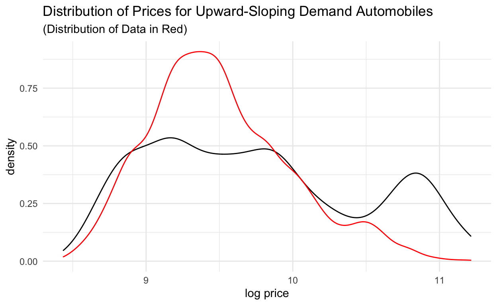
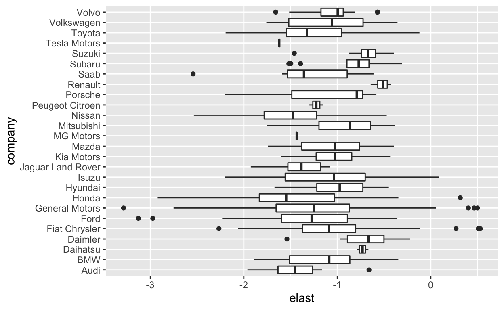
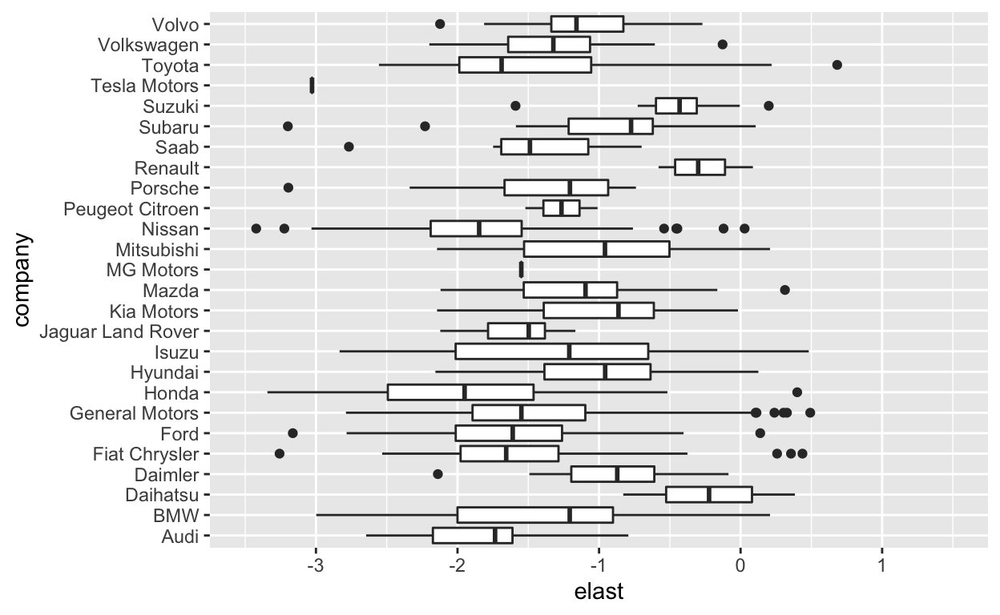
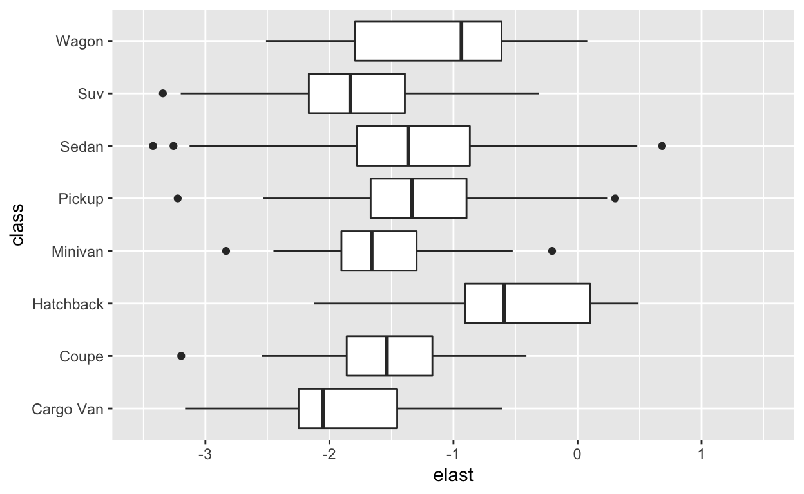

Introduction
In a previous post, we explored the implied own price elasticities of the LASSO, CART, Random Forest, and Boosting models of demand for the US automobile market. We compared these elasticities to the benchmark structural models of demand, and found that while the results of Random Forest and Boosting were at least adequate, they were still too small to be economically plausible. The vast majority lay between -1 and 0, implying that most models were priced on the inelastic portion of the demand curve.
In this post, we will first try to analyze further the implied marginal effects of the two best algorithmic models: Random Forest and Boosting. While computing the numerical derivative like we did last time is one approach to measuring these effects, there are other ways that fall under the banner of “interpretable machine learning.” Using techniques like partial dependence plots, individual conditional expectations, and accumulated local effects we will dive deeper into the black boxes of these models.
Next, we will make a first attempt to overcome the shrinkage bias inherent in the algorithmic models by using newer techniques like double machine learning and generalized random forests. We will see if these methods can provide us with better results for statistical inference.
Interpretable Machine Learning
Partial Dependence Plots
Partial dependence plots are a useful method for understanding the effect of a single variable in an algorithmic model. The idea is simple: compute the average, over the data, of the model’s prediction at a given value of the parameter of interest. Then plot these values over the range of the parameter of interest in the data. The resulting plot shows the implied functional form of the predictive dependence on that variable.
However, this functional form only captures a “true” marginal effect under the assumption that all other variables are uncorrelated with the variable of interest. Otherwise, you may be capturing the marginal effect of other variables that have a “causal” effect which are simply correlated with the variable of interest.
In addition, this procedure by definition rules out heterogeneous effects, since it marginalizes over the distribution of all other variables. We will see how this can be a problem when we discuss individual conditional expectations.
Now we begin implementation. First we load and process the data.
# Load data
df_raw <- haven::read_dta("Model_panel_cleaned.dta")
# Clean and process
df<- df_raw %>%
select(-starts_with("I_"),-count_trim,-Model_id,-MY_id,
-nationality1,-nationality2,
-korea,-mexico,-netherlands,-spain,-italy,-germany,
-france,-uk,-sweden,-japan,-indian,-china,-canada,
-starts_with("income_"),-gas_nominal,-gas_real,
-car_size,-car_volume,-hp_to_cyl,-hp_to_weight,
-transmission_id,-drivetype_id,-body_original,
-model_age,-engine_hp,-mpg_combined,-dpm_combined,
-curb_weight_lbs,-trim_name,-cpi,-log_mpg_combined) %>%
mutate(log_mpg_city=log(mpg_city)) %>%
mutate(log_mpg_hwy=log(mpg_hwy)) %>%
mutate(log_dpm_city=log(dpm_city)) %>%
mutate(log_dpm_hwy=log(dpm_hwy)) %>%
mutate(nationality=case_when(nationality%in%
c("Italy/US","Germany/US") ~ "US",
nationality == "" ~ "US",
TRUE ~ nationality)) %>%
select(-c(mpg_city,mpg_hwy,dpm_city,dpm_hwy)) %>%
mutate_if(is.character,as.factor) %>%
mutate(share=sales/(nb_hh*1000)) %>%
group_by(Year) %>%
mutate(own_mkt_price_ratio=price/((sum(price)-price)/(n()-1))) %>%
group_by(class) %>%
mutate(own_class_price_ratio=price/((sum(price)-price)/(n()-1))) %>%
ungroup %>%
select(-sales,-nb_hh) %>%
drop_na()
# Convert to data frame for better compatibility
df<- as.data.frame(df)
df <- df %>% mutate(share=log(share)) %>%
mutate(price=log(price))
We work with log market shares and log prices here, so that the marginal effects are already the elasticities. This makes for simpler interpretation.
Next, we split the data into test, training, and cross-validation folds.
set.seed(123)
df_split <- initial_split(df, strata = share)
df_train <- training(df_split)
df_test <- testing(df_split)
df_folds <- vfold_cv(df_train, strata = share)
We create a recipe for modeling.
demand_recipe<- recipe(formula= share ~., data=df_train) %>%
update_role(Year, new_role="Market") %>%
step_other(company,threshold=0.05) %>%
step_other(brand,threshold=0.02) %>%
step_other(nationality,threshold=0.02) %>%
step_other(suv_class,threshold=0.02) %>%
step_other(model,threshold=0.0045) %>%
step_dummy(all_nominal())
We fit this model to the training data using the random forest algorithm.
rf_recipe <-
demand_recipe
rf_spec <-
rand_forest(mtry = 42, min_n = 3, trees = 500) %>%
set_mode("regression") %>%
set_engine("ranger")
rf_workflow <-
workflow() %>%
add_recipe(rf_recipe) %>%
add_model(rf_spec) %>%
fit(df_train)
And the XGBoost algorithm.
xgb_recipe <-
demand_recipe
xgb_spec <-
boost_tree(trees = 1968, min_n = 36,
tree_depth = 8, learn_rate = 0.006525845,
loss_reduction = 1.135571e-07, sample_size = 0.6979129) %>%
set_mode("regression") %>%
set_engine("xgboost")
xgb_workflow <-
workflow() %>%
add_recipe(xgb_recipe) %>%
add_model(xgb_spec) %>%
fit(df_train)
Next, we use the “iml” package to calculate the partial dependence plot for the random forest.
data_prep<- prep(xgb_recipe)
data_processed<- bake(data_prep,new_data=df)
rf_predict<- Predictor$new(
model=rf_workflow$fit$fit,
data=data_processed
)
rf_effect<- FeatureEffect$new(
rf_predict,
"price",
"pdp"
)
plot(rf_effect)

This is a fairly interesting result, as it gives us a clue as to where some of the shrinkage is coming from. We can eyeball the slope of the central portion of the plot to be around -1, which corresponds to an “average” elasticity of -1 in this region. This is still a small estimate, but not overly problematic. However, both ends of the price range exhibit extremely little dependence upon price. We might speculate as to the causes of this: perhaps vehicles in these price ranges truly have lower elasticities, or maybe because of the lack of data this type of variation is ignored by the algorithmic models.
Now let’s do the same for the XGBoost model.
data_processed_xgb<- data_processed %>% select(-Year,-share)
xgb_predict<- Predictor$new(
model=xgb_workflow$fit$fit,
data=data_processed_xgb
)
xgb_effect<- FeatureEffect$new(
xgb_predict,
"price",
"pdp"
)
plot(xgb_effect)

The XGBoost PDP is a bit coarser, but it exhibits many of the same qualities as the Random Forest. It especially flattens out in the upper end of the price distribution. Another possible explanation for this is the very low market shares at this end of the distribution; effects of price changes may be difficult to detect.
Accumulated Local Effects
As stated earlier, the PDP exhibits a potential bias due to correlations with other variables. One way of getting around this issue is to use a different kind of marginal effect plot known as accumulated local effects (ALE). Accumulated local effects, instead of marginalizing over the whole distribution of data at each price level, calculates local partial effects of price and then integrates over the conditional distribution of the other variables. Now, since this is an integral-of-a-derivative formula, a free constant is introduced. Thus, the resulting estimates are normalized to have a mean of zero.
The calculation of partial effects and integrating over the conditional distribution instead of the unconditional distribution allow ALE to control for the correlations between price and the other variables. Below we plot the ALE for the Random Forest model.
rf_ale_effect<- FeatureEffect$new(
rf_predict,
"price",
"ale"
)
plot(rf_ale_effect)

Interestingly, the shape isn’t all that different, though slightly flatter. What’s most distinct between this and the PDP is that the marginal effect at the ends of the price distribution is less flat, and thus the whole curve appears closer to linear. This indicates that some of the flatness we observed at the ends of the price distribution could be due to correlations with other covariates: increases in price may have decreased market share ceteris paribus, but these price changes were correlated with some other variable which increased market share, and these effects mostly cancelled each other out. Now let’s take a look at the result for XGBoost.
xgb_ale_effect<- FeatureEffect$new(
xgb_predict,
"price",
"ale"
)
plot(xgb_ale_effect)

XGBoost also sees some linearization, though the right end of the price distribution remains flat.
Individual Conditional Expectations
Finally, we should consider heterogeneity in these effects. Instead of aggregating over the observations, we could simply calculate the model’s predictions for each automobile over the entire price distribution: an individual conditional expectations (ICE) plot. Below we create a (centered) ICE plot for the Random Forest.
rf_ice_effect<- FeatureEffect$new(
rf_predict,
"price",
"ice"
)
rf_ice_effect$center(center.at=min(df$price))
plot(rf_ice_effect)

For interpretation, note that the y-axis should not be interpreted as log market shares for each observation; the ICE curves have been normalized so that they all begin at zero. What we should observe from this plot is that the PDP and ALE obscure significant heterogeneity in the model-implied price elasticities - some models seem to show extreme sensitivity to price in the direction a typical demand curve would imply. Others show sensitivity in the “wrong” direction: the price increases lead to higher predicted shares.
What are the characteristics of the cars with these upward-sloping demand curves? We plot the price distribution below:
temp_df<- df %>% select(company, brand, model, Year,share) %>%
mutate(.id=1:nrow(df))
rf_ice_effect$results %>%
left_join(temp_df,by=".id") %>%
group_by(.id) %>%
mutate(partial=.value-lag(.value)) %>%
drop_na() %>%
ungroup %>%
filter(partial>0) %>%
group_by(.id) %>%
mutate(nobs=n()) %>%
filter(nobs>6) %>%
ggplot(aes(x=price)) +
geom_density() +
geom_density(data=df,col='red') +
xlab("log price") +
theme_minimal()+
ggtitle("Distribution of Prices for Upward-Sloping Demand Automobiles",
subtitle="(Distribution of Data in Red)")

Compared to the overall price distribution, cars with upward sloping demand according to the random forest tend to be much higher-priced.
What about XGBoost? We plot the ICE curves below.
xgb_ice_effect<- FeatureEffect$new(
xgb_predict,
"price",
"ice"
)
xgb_ice_effect$center(center.at=min(df$price))
plot(xgb_ice_effect)

Keep in mind the shrunk scale for this plot relative to that of the Random Forest ICE curves. The XGBoost curves are relatively more inelastic compared to the Random Forest, but they do exhibit the desirable property of having fewer areas of positive elasticity.
Overall, what we learn from the ICE plots is that there is considerable heterogeneity in the price coefficients implied by the algorithmic models, and estimates of elasticities from these models should account for this.
Causal Machine Learning Methods
Double Machine Learning
Double Machine Learning (DML) offers a convenient solution to correct for regularization bias induced by algorithmic estimation of treatment effects in a partially linear setting. This is particularly convenient for us, as we are mostly interested in the coefficient on the price, and have no pressing need for interpretability in other dimensions. In addition, the Logit Model of demand can easily fit into the partially setting; by changing the functional form of the covariate dependency from the linear \(X \beta\) to a general \(f(X)\), we easily obtain a partially linear specification of the demand model with the same properties.
Thus, we will use DML to estimate the price coefficient in the Logit Model of demand in a partially linear setting, and also use instrumental variables to try to control for endogeneity.
First we pre-process the data and calculate the BLP instruments.
df_dml<- data_processed %>%
group_by(Year) %>%
mutate(outside_share=log(1-sum(exp(share)))) %>%
mutate(share=share-outside_share) %>%
ungroup %>%
select(-outside_share) %>%
mutate(company=df$company)
blp_instruments <-
c("log_mpg_city","log_mpg_hwy","log_engine_hp",
"log_hp_to_weight","log_car_size","log_dpm_city","log_dpm_hwy")
df_instruments<- df_dml %>%
group_by(Year,company) %>%
mutate(across(all_of(blp_instruments), ~sum(.x)-.x,.names="BLP2_{.col}")) %>%
ungroup %>%
group_by(Year) %>%
mutate(BLP3_log_car_size = sum(log_car_size) - log_car_size - BLP2_log_car_size,
BLP3_log_mpg_city = sum(log_mpg_city) - log_mpg_city - BLP2_log_mpg_city,
BLP3_log_mpg_hwy = sum(log_mpg_hwy) - log_mpg_hwy - BLP2_log_mpg_hwy,
BLP3_log_dpm_city = sum(log_dpm_city) - log_dpm_city - BLP2_log_dpm_city,
BLP3_log_dpm_hwy = sum(log_dpm_hwy) - log_dpm_hwy - BLP2_log_dpm_hwy,
BLP3_log_engine_hp = sum(log_engine_hp) - log_engine_hp - BLP2_log_engine_hp,
BLP3_log_hp_to_weight = sum(log_hp_to_weight) - log_hp_to_weight - BLP2_log_hp_to_weight
) %>%
ungroup %>%
select(company_exchange_rate,starts_with("BLP2") | starts_with("BLP3"))
df_dml<- df_dml %>%
select(-Year,-own_class_price_ratio,-own_mkt_price_ratio,
-company_exchange_rate,-company) %>%
mutate(price=exp(price)/1000)
Next, we specify the model and estimate. We use the Random Forest algorithm.
data_dml = double_ml_data_from_data_frame(df_dml,
y_col ="share",
d_cols = "price",
x_cols = setdiff(colnames(df_dml),
c("share","price")))
learner = lrn("regr.ranger", num.trees = 500, mtry = 42,
min.node.size = 3, max.depth = 8)
ml_g = learner$clone()
ml_m = learner$clone()
set.seed(1111)
dml_plr_obj = DoubleMLPLR$new(data_dml, ml_g, ml_m)
dml_plr_obj$fit()
INFO [04:54:04.039] [mlr3] Applying learner 'regr.ranger' on task 'nuis_g' (iter 2/5)
INFO [04:54:18.372] [mlr3] Applying learner 'regr.ranger' on task 'nuis_g' (iter 3/5)
INFO [04:54:32.401] [mlr3] Applying learner 'regr.ranger' on task 'nuis_g' (iter 4/5)
INFO [04:54:46.514] [mlr3] Applying learner 'regr.ranger' on task 'nuis_g' (iter 5/5)
INFO [04:54:59.978] [mlr3] Applying learner 'regr.ranger' on task 'nuis_g' (iter 1/5)
INFO [04:55:15.119] [mlr3] Applying learner 'regr.ranger' on task 'nuis_m' (iter 3/5)
INFO [04:55:29.112] [mlr3] Applying learner 'regr.ranger' on task 'nuis_m' (iter 2/5)
INFO [04:55:43.914] [mlr3] Applying learner 'regr.ranger' on task 'nuis_m' (iter 5/5)
INFO [04:55:58.095] [mlr3] Applying learner 'regr.ranger' on task 'nuis_m' (iter 1/5)
INFO [04:56:12.639] [mlr3] Applying learner 'regr.ranger' on task 'nuis_m' (iter 4/5) print(dml_plr_obj)
================= DoubleMLPLR Object ==================
------------------ Data summary ------------------
Outcome variable: share
Treatment variable(s): price
Covariates: engine_nbcylinder, wheelbase_ins, size_length_ins, size_width_ins, size_height_ins, engine_hp_rpm, engine_size_cc, nb_doors, log_hp_to_weight, log_hp_to_cyl, log_engine_hp, log_curb_weight_lbs, log_car_size, log_car_volume, log_model_age, real_income_p20, real_income_p40, real_income_p60, real_income_p80, real_income_p95, nb_bodystyle, log_mpg_city, log_mpg_hwy, log_dpm_city, log_dpm_hwy, company_Ford, company_General.Motors, company_Honda, company_Nissan, company_Toyota, company_other, brand_Audi, brand_Bmw, brand_Buick, brand_Cadillac, brand_Chevrolet, brand_Chrysler, brand_Dodge, brand_Ford, brand_Gmc, brand_Honda, brand_Hyundai, brand_Lexus, brand_Mazda, brand_Mercedes.Benz, brand_Mercury, brand_Mitsubishi, brand_Nissan, brand_Pontiac, brand_Subaru, brand_Toyota, brand_Volkswagen, brand_other, model_Bmw.7.Series, model_Caravan, model_Corolla, model_Corvette, model_F.Series, model_Mercedes.E.Class, model_Mercedes.S.Class, model_Mustang, model_Sentra, model_Suburban, model_other, engine_fuel_Elec, engine_fuel_Gas, nationality_Japan, nationality_Korea, nationality_US, nationality_other, drivetype_FWD, drivetype_RWD, transmission_M, class_Coupe, class_Hatchback, class_Minivan, class_Pickup, class_Sedan, class_Suv, class_Wagon, suv_class_Compact, suv_class_Compact.Crossover, suv_class_Fullsize, suv_class_Midsize, suv_class_Midsize.Crossover, suv_class_other
Instrument(s):
No. Observations: 6875
------------------ Score & algorithm ------------------
Score function: partialling out
DML algorithm: dml2
------------------ Machine learner ------------------
ml_g: regr.ranger
ml_m: regr.ranger
------------------ Resampling ------------------
No. folds: 5
No. repeated sample splits: 1
Apply cross-fitting: TRUE
------------------ Fit summary ------------------
[1] "Estimates and significance testing of the effect of target variables"
Estimate. Std. Error t value Pr(>|t|)
price -0.050520 0.004297 -11.76 <2e-16 ***
---
Signif. codes: 0 '***' 0.001 '**' 0.01 '*' 0.05 '.' 0.1 ' ' 1We could plot the resulting elasticities, but we don’t need to - the estimated price coefficient is almost exactly what was produced by the OLS and IV Logit models! Thus, the elasticities are approximately the same.
What if we try to account for more non-linearities in the covariates? Below we add in some polynomial expansions of selected variables and re-estimate.
df_dml_2<- df_dml %>% mutate(hp_w_sq=(log_hp_to_weight)^2,
car_size_sq=(log_car_size)^2,
model_age_sq=(log_model_age)^2,
mpg_city_sq=(log_mpg_city)^2,
mpg_hwy_sq=(log_mpg_hwy)^2)
data_dml_2 = double_ml_data_from_data_frame(df_dml_2,
y_col ="share",
d_cols = c("price"),
x_cols = setdiff(colnames(df_dml_2),
c("share","price")))
learner = lrn("regr.ranger", num.trees = 500, mtry = 42,
min.node.size = 3, max.depth = 8)
ml_g = learner$clone()
ml_m = learner$clone()
set.seed(1111)
dml_plr_obj_2 = DoubleMLPLR$new(data_dml_2, ml_g, ml_m)
dml_plr_obj_2$fit()
INFO [04:56:27.804] [mlr3] Applying learner 'regr.ranger' on task 'nuis_g' (iter 2/5)
INFO [04:56:42.224] [mlr3] Applying learner 'regr.ranger' on task 'nuis_g' (iter 3/5)
INFO [04:56:56.723] [mlr3] Applying learner 'regr.ranger' on task 'nuis_g' (iter 4/5)
INFO [04:57:11.798] [mlr3] Applying learner 'regr.ranger' on task 'nuis_g' (iter 5/5)
INFO [04:57:26.871] [mlr3] Applying learner 'regr.ranger' on task 'nuis_g' (iter 1/5)
INFO [04:57:41.059] [mlr3] Applying learner 'regr.ranger' on task 'nuis_m' (iter 3/5)
INFO [04:57:57.243] [mlr3] Applying learner 'regr.ranger' on task 'nuis_m' (iter 2/5)
INFO [04:58:12.388] [mlr3] Applying learner 'regr.ranger' on task 'nuis_m' (iter 5/5)
INFO [04:58:27.406] [mlr3] Applying learner 'regr.ranger' on task 'nuis_m' (iter 1/5)
INFO [04:58:42.145] [mlr3] Applying learner 'regr.ranger' on task 'nuis_m' (iter 4/5) print(dml_plr_obj_2)
================= DoubleMLPLR Object ==================
------------------ Data summary ------------------
Outcome variable: share
Treatment variable(s): price
Covariates: engine_nbcylinder, wheelbase_ins, size_length_ins, size_width_ins, size_height_ins, engine_hp_rpm, engine_size_cc, nb_doors, log_hp_to_weight, log_hp_to_cyl, log_engine_hp, log_curb_weight_lbs, log_car_size, log_car_volume, log_model_age, real_income_p20, real_income_p40, real_income_p60, real_income_p80, real_income_p95, nb_bodystyle, log_mpg_city, log_mpg_hwy, log_dpm_city, log_dpm_hwy, company_Ford, company_General.Motors, company_Honda, company_Nissan, company_Toyota, company_other, brand_Audi, brand_Bmw, brand_Buick, brand_Cadillac, brand_Chevrolet, brand_Chrysler, brand_Dodge, brand_Ford, brand_Gmc, brand_Honda, brand_Hyundai, brand_Lexus, brand_Mazda, brand_Mercedes.Benz, brand_Mercury, brand_Mitsubishi, brand_Nissan, brand_Pontiac, brand_Subaru, brand_Toyota, brand_Volkswagen, brand_other, model_Bmw.7.Series, model_Caravan, model_Corolla, model_Corvette, model_F.Series, model_Mercedes.E.Class, model_Mercedes.S.Class, model_Mustang, model_Sentra, model_Suburban, model_other, engine_fuel_Elec, engine_fuel_Gas, nationality_Japan, nationality_Korea, nationality_US, nationality_other, drivetype_FWD, drivetype_RWD, transmission_M, class_Coupe, class_Hatchback, class_Minivan, class_Pickup, class_Sedan, class_Suv, class_Wagon, suv_class_Compact, suv_class_Compact.Crossover, suv_class_Fullsize, suv_class_Midsize, suv_class_Midsize.Crossover, suv_class_other, hp_w_sq, car_size_sq, model_age_sq, mpg_city_sq, mpg_hwy_sq
Instrument(s):
No. Observations: 6875
------------------ Score & algorithm ------------------
Score function: partialling out
DML algorithm: dml2
------------------ Machine learner ------------------
ml_g: regr.ranger
ml_m: regr.ranger
------------------ Resampling ------------------
No. folds: 5
No. repeated sample splits: 1
Apply cross-fitting: TRUE
------------------ Fit summary ------------------
[1] "Estimates and significance testing of the effect of target variables"
Estimate. Std. Error t value Pr(>|t|)
price -0.049932 0.004175 -11.96 <2e-16 ***
---
Signif. codes: 0 '***' 0.001 '**' 0.01 '*' 0.05 '.' 0.1 ' ' 1The result is almost exactly the same, providing a rudimentary robustness check. Next, we’ll add in the instrumental variables and estimate a partially linear IV regression.
data_dml_iv<- double_ml_data_from_data_frame(cbind(df_dml,df_instruments),
y_col="share",d_cols="price",
x_cols=setdiff(colnames(df_dml),
c("share","price",paste0("BLP2_",blp_instruments),
paste0("BLP3_",blp_instruments),"company_exchange_rate")),
z_cols=c(paste0("BLP2_",blp_instruments),
paste0("BLP3_",blp_instruments),
"company_exchange_rate"))
learner = lrn("regr.ranger", num.trees = 500,
mtry = 42, min.node.size = 3, max.depth = 8)
ml_g = learner$clone()
ml_m = learner$clone()
ml_r = learner$clone()
set.seed(2222)
dml_pliv_obj = DoubleMLPLIV$new(data_dml_iv, ml_g, ml_m, ml_r)
dml_pliv_obj$fit()
INFO [04:58:57.836] [mlr3] Applying learner 'regr.ranger' on task 'nuis_g' (iter 2/5)
INFO [04:59:12.154] [mlr3] Applying learner 'regr.ranger' on task 'nuis_g' (iter 3/5)
INFO [04:59:26.190] [mlr3] Applying learner 'regr.ranger' on task 'nuis_g' (iter 1/5)
INFO [04:59:40.601] [mlr3] Applying learner 'regr.ranger' on task 'nuis_g' (iter 5/5)
INFO [04:59:53.710] [mlr3] Applying learner 'regr.ranger' on task 'nuis_g' (iter 4/5)
INFO [05:00:08.332] [mlr3] Applying learner 'regr.ranger' on task 'nuis_r' (iter 1/5)
INFO [05:00:23.352] [mlr3] Applying learner 'regr.ranger' on task 'nuis_r' (iter 2/5)
INFO [05:00:38.178] [mlr3] Applying learner 'regr.ranger' on task 'nuis_r' (iter 3/5)
INFO [05:00:52.226] [mlr3] Applying learner 'regr.ranger' on task 'nuis_r' (iter 5/5)
INFO [05:01:06.544] [mlr3] Applying learner 'regr.ranger' on task 'nuis_r' (iter 4/5)
INFO [05:01:21.516] [mlr3] Applying learner 'regr.ranger' on task 'nuis_m' (iter 2/5)
INFO [05:01:35.565] [mlr3] Applying learner 'regr.ranger' on task 'nuis_m' (iter 3/5)
INFO [05:01:49.796] [mlr3] Applying learner 'regr.ranger' on task 'nuis_m' (iter 4/5)
INFO [05:02:03.924] [mlr3] Applying learner 'regr.ranger' on task 'nuis_m' (iter 1/5)
INFO [05:02:18.768] [mlr3] Applying learner 'regr.ranger' on task 'nuis_m' (iter 5/5)
INFO [05:02:33.934] [mlr3] Applying learner 'regr.ranger' on task 'nuis_m' (iter 2/5)
INFO [05:02:47.807] [mlr3] Applying learner 'regr.ranger' on task 'nuis_m' (iter 4/5)
INFO [05:03:02.458] [mlr3] Applying learner 'regr.ranger' on task 'nuis_m' (iter 1/5)
INFO [05:03:16.684] [mlr3] Applying learner 'regr.ranger' on task 'nuis_m' (iter 5/5)
INFO [05:03:30.918] [mlr3] Applying learner 'regr.ranger' on task 'nuis_m' (iter 3/5)
INFO [05:03:45.128] [mlr3] Applying learner 'regr.ranger' on task 'nuis_m' (iter 2/5)
INFO [05:03:58.986] [mlr3] Applying learner 'regr.ranger' on task 'nuis_m' (iter 4/5)
INFO [05:04:14.137] [mlr3] Applying learner 'regr.ranger' on task 'nuis_m' (iter 1/5)
INFO [05:04:29.280] [mlr3] Applying learner 'regr.ranger' on task 'nuis_m' (iter 5/5)
INFO [05:04:43.951] [mlr3] Applying learner 'regr.ranger' on task 'nuis_m' (iter 3/5)
INFO [05:04:59.040] [mlr3] Applying learner 'regr.ranger' on task 'nuis_m' (iter 2/5)
INFO [05:05:14.524] [mlr3] Applying learner 'regr.ranger' on task 'nuis_m' (iter 4/5)
INFO [05:05:28.941] [mlr3] Applying learner 'regr.ranger' on task 'nuis_m' (iter 1/5)
INFO [05:05:43.022] [mlr3] Applying learner 'regr.ranger' on task 'nuis_m' (iter 5/5)
INFO [05:05:57.551] [mlr3] Applying learner 'regr.ranger' on task 'nuis_m' (iter 3/5)
INFO [05:06:12.464] [mlr3] Applying learner 'regr.ranger' on task 'nuis_m' (iter 1/5)
INFO [05:06:26.944] [mlr3] Applying learner 'regr.ranger' on task 'nuis_m' (iter 4/5)
INFO [05:06:41.048] [mlr3] Applying learner 'regr.ranger' on task 'nuis_m' (iter 3/5)
INFO [05:06:55.005] [mlr3] Applying learner 'regr.ranger' on task 'nuis_m' (iter 2/5)
INFO [05:07:09.916] [mlr3] Applying learner 'regr.ranger' on task 'nuis_m' (iter 5/5)
INFO [05:07:25.325] [mlr3] Applying learner 'regr.ranger' on task 'nuis_m' (iter 3/5)
INFO [05:07:41.190] [mlr3] Applying learner 'regr.ranger' on task 'nuis_m' (iter 2/5)
INFO [05:07:54.642] [mlr3] Applying learner 'regr.ranger' on task 'nuis_m' (iter 4/5)
INFO [05:08:06.702] [mlr3] Applying learner 'regr.ranger' on task 'nuis_m' (iter 1/5)
INFO [05:08:17.749] [mlr3] Applying learner 'regr.ranger' on task 'nuis_m' (iter 5/5)
INFO [05:08:29.291] [mlr3] Applying learner 'regr.ranger' on task 'nuis_m' (iter 2/5)
INFO [05:08:40.082] [mlr3] Applying learner 'regr.ranger' on task 'nuis_m' (iter 3/5)
INFO [05:08:50.746] [mlr3] Applying learner 'regr.ranger' on task 'nuis_m' (iter 1/5)
INFO [05:09:01.495] [mlr3] Applying learner 'regr.ranger' on task 'nuis_m' (iter 5/5)
INFO [05:09:12.403] [mlr3] Applying learner 'regr.ranger' on task 'nuis_m' (iter 4/5)
INFO [05:09:23.697] [mlr3] Applying learner 'regr.ranger' on task 'nuis_m' (iter 1/5)
INFO [05:09:35.980] [mlr3] Applying learner 'regr.ranger' on task 'nuis_m' (iter 4/5)
INFO [05:09:48.331] [mlr3] Applying learner 'regr.ranger' on task 'nuis_m' (iter 3/5)
INFO [05:10:00.516] [mlr3] Applying learner 'regr.ranger' on task 'nuis_m' (iter 2/5)
INFO [05:10:12.940] [mlr3] Applying learner 'regr.ranger' on task 'nuis_m' (iter 5/5)
INFO [05:10:25.272] [mlr3] Applying learner 'regr.ranger' on task 'nuis_m' (iter 4/5)
INFO [05:10:37.602] [mlr3] Applying learner 'regr.ranger' on task 'nuis_m' (iter 5/5)
INFO [05:10:49.677] [mlr3] Applying learner 'regr.ranger' on task 'nuis_m' (iter 3/5)
INFO [05:11:01.779] [mlr3] Applying learner 'regr.ranger' on task 'nuis_m' (iter 2/5)
INFO [05:11:14.365] [mlr3] Applying learner 'regr.ranger' on task 'nuis_m' (iter 1/5)
INFO [05:11:26.559] [mlr3] Applying learner 'regr.ranger' on task 'nuis_m' (iter 3/5)
INFO [05:11:37.861] [mlr3] Applying learner 'regr.ranger' on task 'nuis_m' (iter 2/5)
INFO [05:11:49.048] [mlr3] Applying learner 'regr.ranger' on task 'nuis_m' (iter 5/5)
INFO [05:12:00.094] [mlr3] Applying learner 'regr.ranger' on task 'nuis_m' (iter 4/5)
INFO [05:12:11.658] [mlr3] Applying learner 'regr.ranger' on task 'nuis_m' (iter 1/5)
INFO [05:12:23.187] [mlr3] Applying learner 'regr.ranger' on task 'nuis_m' (iter 4/5)
INFO [05:12:34.028] [mlr3] Applying learner 'regr.ranger' on task 'nuis_m' (iter 2/5)
INFO [05:12:44.922] [mlr3] Applying learner 'regr.ranger' on task 'nuis_m' (iter 5/5)
INFO [05:12:56.075] [mlr3] Applying learner 'regr.ranger' on task 'nuis_m' (iter 1/5)
INFO [05:13:07.216] [mlr3] Applying learner 'regr.ranger' on task 'nuis_m' (iter 3/5)
INFO [05:13:18.495] [mlr3] Applying learner 'regr.ranger' on task 'nuis_m' (iter 2/5)
INFO [05:13:30.693] [mlr3] Applying learner 'regr.ranger' on task 'nuis_m' (iter 3/5)
INFO [05:13:41.845] [mlr3] Applying learner 'regr.ranger' on task 'nuis_m' (iter 5/5)
INFO [05:13:53.046] [mlr3] Applying learner 'regr.ranger' on task 'nuis_m' (iter 4/5)
INFO [05:14:04.156] [mlr3] Applying learner 'regr.ranger' on task 'nuis_m' (iter 1/5)
INFO [05:14:15.796] [mlr3] Applying learner 'regr.ranger' on task 'nuis_m' (iter 3/5)
INFO [05:14:27.465] [mlr3] Applying learner 'regr.ranger' on task 'nuis_m' (iter 4/5)
INFO [05:14:39.341] [mlr3] Applying learner 'regr.ranger' on task 'nuis_m' (iter 2/5)
INFO [05:14:50.977] [mlr3] Applying learner 'regr.ranger' on task 'nuis_m' (iter 5/5)
INFO [05:15:02.651] [mlr3] Applying learner 'regr.ranger' on task 'nuis_m' (iter 1/5)
INFO [05:15:14.545] [mlr3] Applying learner 'regr.ranger' on task 'nuis_m' (iter 4/5)
INFO [05:15:26.123] [mlr3] Applying learner 'regr.ranger' on task 'nuis_m' (iter 3/5)
INFO [05:15:37.652] [mlr3] Applying learner 'regr.ranger' on task 'nuis_m' (iter 5/5)
INFO [05:15:49.047] [mlr3] Applying learner 'regr.ranger' on task 'nuis_m' (iter 1/5)
INFO [05:16:00.558] [mlr3] Applying learner 'regr.ranger' on task 'nuis_m' (iter 2/5)
INFO [05:16:13.211] [mlr3] Applying learner 'regr.ranger' on task 'nuis_m' (iter 3/5)
INFO [05:16:21.866] [mlr3] Applying learner 'regr.ranger' on task 'nuis_m' (iter 5/5)
INFO [05:16:30.693] [mlr3] Applying learner 'regr.ranger' on task 'nuis_m' (iter 1/5)
INFO [05:16:39.433] [mlr3] Applying learner 'regr.ranger' on task 'nuis_m' (iter 2/5)
INFO [05:16:48.026] [mlr3] Applying learner 'regr.ranger' on task 'nuis_m' (iter 4/5)
INFO [05:16:56.735] [mlr3] Applying learner 'regr.lm' on task 'nuis_r_tilde' (iter 1/1) print(dml_pliv_obj)
================= DoubleMLPLIV Object ==================
------------------ Data summary ------------------
Outcome variable: share
Treatment variable(s): price
Covariates: engine_nbcylinder, wheelbase_ins, size_length_ins, size_width_ins, size_height_ins, engine_hp_rpm, engine_size_cc, nb_doors, log_hp_to_weight, log_hp_to_cyl, log_engine_hp, log_curb_weight_lbs, log_car_size, log_car_volume, log_model_age, real_income_p20, real_income_p40, real_income_p60, real_income_p80, real_income_p95, nb_bodystyle, log_mpg_city, log_mpg_hwy, log_dpm_city, log_dpm_hwy, company_Ford, company_General.Motors, company_Honda, company_Nissan, company_Toyota, company_other, brand_Audi, brand_Bmw, brand_Buick, brand_Cadillac, brand_Chevrolet, brand_Chrysler, brand_Dodge, brand_Ford, brand_Gmc, brand_Honda, brand_Hyundai, brand_Lexus, brand_Mazda, brand_Mercedes.Benz, brand_Mercury, brand_Mitsubishi, brand_Nissan, brand_Pontiac, brand_Subaru, brand_Toyota, brand_Volkswagen, brand_other, model_Bmw.7.Series, model_Caravan, model_Corolla, model_Corvette, model_F.Series, model_Mercedes.E.Class, model_Mercedes.S.Class, model_Mustang, model_Sentra, model_Suburban, model_other, engine_fuel_Elec, engine_fuel_Gas, nationality_Japan, nationality_Korea, nationality_US, nationality_other, drivetype_FWD, drivetype_RWD, transmission_M, class_Coupe, class_Hatchback, class_Minivan, class_Pickup, class_Sedan, class_Suv, class_Wagon, suv_class_Compact, suv_class_Compact.Crossover, suv_class_Fullsize, suv_class_Midsize, suv_class_Midsize.Crossover, suv_class_other
Instrument(s): BLP2_log_mpg_city, BLP2_log_mpg_hwy, BLP2_log_engine_hp, BLP2_log_hp_to_weight, BLP2_log_car_size, BLP2_log_dpm_city, BLP2_log_dpm_hwy, BLP3_log_mpg_city, BLP3_log_mpg_hwy, BLP3_log_engine_hp, BLP3_log_hp_to_weight, BLP3_log_car_size, BLP3_log_dpm_city, BLP3_log_dpm_hwy, company_exchange_rate
No. Observations: 6875
------------------ Score & algorithm ------------------
Score function: partialling out
DML algorithm: dml2
------------------ Machine learner ------------------
ml_g: regr.ranger
ml_m: regr.ranger
ml_r: regr.ranger
------------------ Resampling ------------------
No. folds: 5
No. repeated sample splits: 1
Apply cross-fitting: TRUE
------------------ Fit summary ------------------
[1] "Estimates and significance testing of the effect of target variables"
Estimate. Std. Error t value Pr(>|t|)
price -0.04949 0.02426 -2.04 0.0414 *
---
Signif. codes: 0 '***' 0.001 '**' 0.01 '*' 0.05 '.' 0.1 ' ' 1Again, the results are very similar, with some lowering of the significance level. As with the IV Logit, these instruments seem to make little difference in the price coefficient estimates.
Generalized Random Forest
The Generalized Random Forest method encompasses a broad range of machine learning algorithms for estimating parameters based on local moment conditions, and is particularly attuned to the flexible estimation of heterogeneous treatment effects. The idea is to borrow a technique from non-parametric regression: use some sort of weighting function to estimate a regression locally around each data point. However, instead of using a kernel weighting function, the causal random forest performs the DML-style residual-on-residual regression using weights provided by a random forest model. The random forest is used to identify regions of significant heterogeneity in the target variable, thus providing a more adaptive estimate of local effects than a pre-specified kernel. There are several other interesting details to this method, but we will refrain from going too in-depth here.
This method will prove valuable in our setting, as we can use GRF to estimate a log-on-log partially linear regression with individual coefficients on prices, directly giving us estimates of own-price elasticities. GRF also extends to IV settings, though the package currently only allows for one instrument. For this instrument, we will use a Hausman-style instrument, controlling for secular trends in pricing.
We begin by pre-processing the data and splitting into training and test sets.
df_grf<- cbind(df_dml %>% mutate(price=log(price*1000)),df_instruments)
df_grf<- df_grf %>%
mutate(share=(df$share)) %>%
mutate(brand=df$brand,model=df$model,Year=df$Year) %>%
mutate(id=paste0(brand,model)) %>%
group_by(Year) %>%
mutate(pr_score=(price-mean(price))/sd(price)) %>%
ungroup %>%
group_by(id) %>%
mutate(haus_inst=(sum(pr_score)-pr_score)/(n()-1)) %>%
ungroup %>%
select(-c(brand,model,Year,id,pr_score)) %>%
drop_na()
set.seed(123)
grf_split <- initial_split(df_grf, strata = share)
grf_train <- training(grf_split)
grf_test <- testing(grf_split)
Next, we put our data into matrix form, with \(X\) as the non-price covariates, \(Y\) as the market shares, \(W\) as the prices (treatment variable), and \(Z\) as the instruments. Then the causal forest is estimated, the resulting elasticities are calculated on the entire dataset, and the results are plotted below.
grf_X<- as.matrix(grf_train[setdiff(colnames(grf_train),
c("share","price",paste0("BLP2_",blp_instruments),
paste0("BLP3_",blp_instruments),
"company_exchange_rate","haus_inst"))])
grf_Y<- grf_train$share
grf_W<- grf_train$price
grf_Z<- as.matrix(grf_train[c(paste0("BLP2_",blp_instruments),
paste0("BLP3_",blp_instruments),
"company_exchange_rate","haus_inst")])
attr(grf_Y,"label")<- NULL
attr(grf_Y, "format.stata")<- NULL
attr(grf_W,"label")<- NULL
attr(grf_W, "format.stata")<- NULL
elast_cforest<- causal_forest(grf_X,grf_Y,grf_W)
all_X<- as.matrix(df_grf[setdiff(colnames(grf_train),
c("share","price",paste0("BLP2_",blp_instruments),
paste0("BLP3_",blp_instruments),
"company_exchange_rate","haus_inst"))])
elast_pred<- predict(elast_cforest,all_X)
elast_df <- inner_join(df_grf,df) %>% select(-c(engine_fuel,nationality,drivetype,transmission,
suv_class,own_mkt_price_ratio,own_class_price_ratio)) %>%
mutate(elast=elast_pred$predictions)
elast_df_model<- elast_df %>%
group_by(company, brand, model) %>%
summarize(price=median(price),
class=Mode(class),elast=median(elast))
elast_df_model %>% ggplot(aes(x=company,y=elast)) + geom_boxplot() + coord_flip()

These estimates are much more promising, and even exhibit a similar type of heterogeneity as we saw from the BLP model. They still exhibit a considerable degree of shrinkage, unfortunately, with only about 60% of the elasticities being greater than 1 in absolute value.
Next, we’ll try to address this shrinkage using an instrumental variable, here the Hausman-style instrument.
elast_instforest<- instrumental_forest(grf_X,grf_Y,grf_W,grf_Z[,16])
elast_pred_inst<- predict(elast_instforest,all_X)
elast_df_inst<- df_grf %>% mutate(elast=elast_pred_inst$predictions) %>%
mutate(company=elast_df$company,brand=elast_df$brand,
model=elast_df$model,Year=elast_df$Year,class=elast_df$class)
elast_df_model_inst<- elast_df_inst %>%
group_by(company, brand, model) %>%
summarize(price=median(price),
class=Mode(class),elast=median(elast),n_obs=n()) %>%
ungroup %>% group_by(company) %>%
mutate(n_obs_c = n()) %>% ungroup
elast_df_model_inst %>% ggplot(aes(x=company,y=elast)) +
geom_boxplot() + scale_color_viridis() +
ylim(-3.5,1.5) + coord_flip()

Again, shrinkage is still present, but the results are significantly better! In fact, about three-quarters of the estimates are greater than one in absolute value. These results dominate those of all the algorithmic models, DML, and OLS and IV Logit estimations. Only the BLP estimates are more elastic. In addition, the heterogeneity is rather sensible for the most part, though the elasticities for some luxury brands is much smaller than we saw from BLP.
What if we look at the heterogeneity in elasticities across a different dimension, like class of vehicle? Results are shown below:
elast_df_model_inst %>% ggplot(aes(x=class,y=elast)) +
geom_boxplot() + scale_color_viridis() +
ylim(-3.5,1.5) + coord_flip()

Most interesting here is the result for Hatchbacks, implying that most of their elasticities are inelastic. This is a bit of a mystery to me, and probably warrants some further investigation. Other interesting findings are that SUVs and Cargo Vans appear to demonstrate the highest own-price elasticities.
Conclusion
While traditional machine learning algorithms have clear issues when it comes to interpreting their results causally, there is still information to be gained from analyzing partial effects and peeking inside the black box. We discover in our case some estimation issues on the high end of the price spectrum, and significant heterogeneity in partial effects across observations.
Causal machine learning algorithms in principle solve some of the causal interpretation problem of algorithmic models, and we certainly see some of their advantages in our setting. Accounting for regularization bias, we are at least able to bring elasticities up to the OLS/IV Logit levels. Adding in heterogeneous treatment effect estimation through causal random forest, we are able to produce better results than the baseline Logit model and begin to approach the BLP results. However, there is still much left to explore - we still haven’t accounted for the market structure and the cross-price elasticities. In future posts we will attempt to address these issues both by brute force (throwing all the other prices in the covariate matrix) and by using multi-task learning methods.